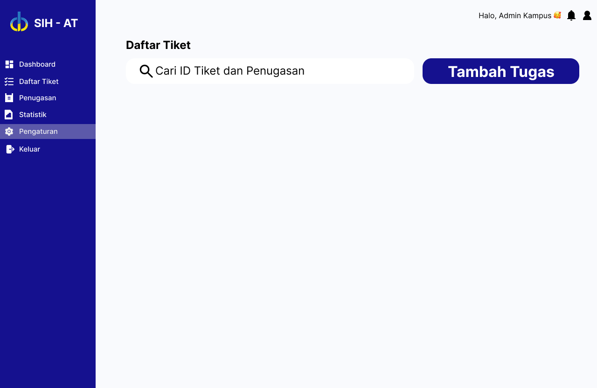
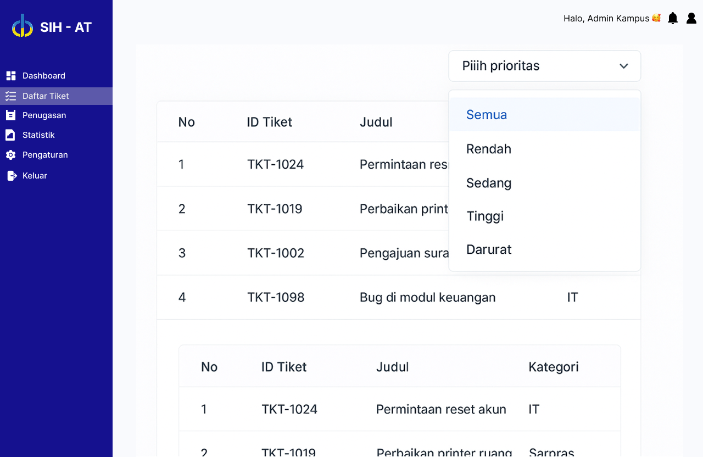
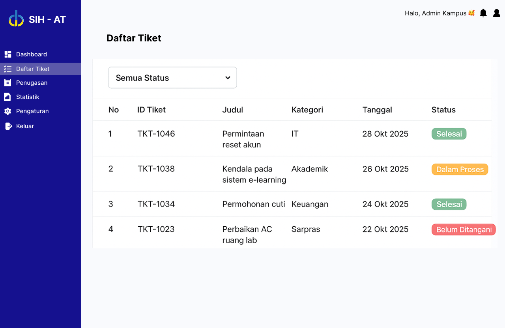
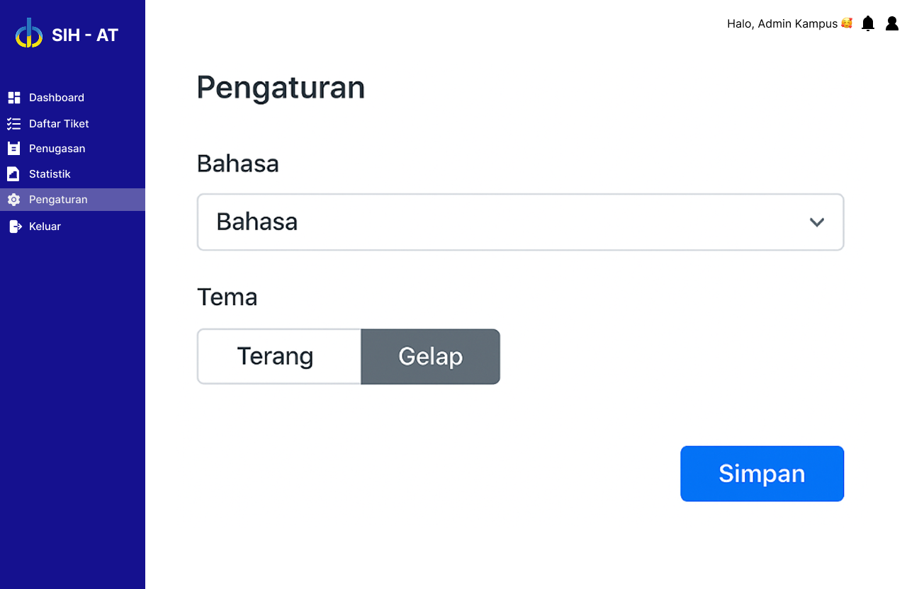

ALFARIZI SIDIQ
NIM 222611001 - Kelas DB NR 7
Inilah Hasil Project Design Thinking Tentang Suatu Manajemen Untuk Pengaduan Antar Mahasiswa dan Pihak Kampus Supaya Tidak MISKOM.
✨ Visualisasi 25 Desain Antarmuka Pilihan
-

- UX 1: Penggunaan tombol "Tugaskan ke Staf" sebagai Call to Action (CTA) yang jelas untuk aksi selanjutnya.
- UX 2: Status tiket menggunakan warna (Merah, Kuning, Hijau) sesuai prinsip Color Semantics untuk urgensi.
- UX 3: Hierarki visual yang baik, memisahkan Detail Tiket dan Deskripsi secara jelas.
-

- UX 1: Desain login yang minimalis dan terpusat untuk mengurangi *cognitive load*.
- UX 2: Penggunaan label di atas kolom input yang selalu terlihat (*floating label*) untuk konteks.
- UX 3: Kontras tombol Login yang tinggi (gelap) untuk memandu pengguna ke aksi utama.
-

- UX 1: Grafik Garis (Line Chart) digunakan untuk menampilkan tren, sesuai dengan prinsip Data Visualization.
- UX 2: Kartu statistik di atas (Jumlah Tiket, Tiket Selesai, Tiket Dibuka) menggunakan ukuran yang besar agar mudah dilihat (*glanceable*).
- UX 3: Penempatan navigasi (Informasi Rikan, Pengaturan, Penugasan) konsisten di sisi kanan atas.
-

- UX 1: Penggunaan *Sidebar Navigation* yang ringkas dan *collapsible* (dapat dilipat) untuk menghemat ruang layar.
- UX 2: Ikonografi yang jelas (misalnya ikon orang untuk Staf, ikon *checklist* untuk Tugas) membantu pemahaman cepat.
- UX 3: Tata letak kartu (Staf Administrasi, Tugas Baru) yang membagi informasi menjadi *chunk* yang mudah diproses.
-

- UX 1: Warna Biru tua (Navy) sebagai warna primer memberikan kesan profesional, terpercaya, dan bersih.
- UX 2: Struktur 5x5 grid (di tampilan galeri) membantu pengguna memindai 25 desain dengan cepat (Prinsip Hick's Law).
- UX 3: Pemisahan jelas antara Header (judul, biodata) dan Konten Utama (galeri/form) dengan garis pemisah (`
`).
-

- UX 1: Penggunaan tabel yang responsif untuk Daftar Tiket agar mudah diakses di berbagai ukuran layar.
- UX 2: Fitur Filter dan Search (pencarian) ditempatkan di atas tabel untuk mempermudah navigasi data.
- UX 3: Desain menunjukkan *Affordance* yang jelas, di mana tombol Tambah Tugas terlihat menonjol dan dapat diklik.
-

- UX 1: Kartu (Card) digunakan untuk memisahkan setiap Tugas/Tiket, membantu memproses informasi terpisah.
- UX 2: Desain menggunakan *white space* (ruang kosong) yang cukup di sekitar elemen untuk mengurangi kepadatan visual.
- UX 3: Tombol Aksi (Tugaskan, Status, dll.) diletakkan secara kontekstual di dalam kartu yang relevan.
-

- UX 1: Desain tiket/tugas yang ringkas (hanya Judul, Status, Tanggal) untuk *glanceability* di daftar utama.
- UX 2: Status "Baru Dibuka" dan "Dalam Proses" menggunakan warna yang berbeda untuk sinyal cepat.
- UX 3: Penomoran tiket (misal T-0105) memberikan identitas unik dan dapat dilacak (*traceability*).
-

- UX 1: Form input menggunakan tata letak satu kolom (linear) untuk mengurangi potensi kesalahan pengisian data (Prinsip Konsistensi).
- UX 2: Pilihan Kategori dan Prioritas menggunakan dropdown atau radio button untuk membatasi input pengguna.
- UX 3: Tombol "Kirim" berwarna biru solid menunjukkan aksi utama yang harus dilakukan pengguna.
-

- UX 1: Status "Sedang Diproses" menggunakan warna kuning/oranye untuk menunjukkan kondisi menunggu atau dalam pengerjaan.
- UX 2: Informasi detail (Nama, Tanggal) ditampilkan jelas di dalam kartu untuk kontekstualisasi tugas.
- UX 3: Penggunaan ikon jam pasir di samping status memberikan *feedback* visual tentang proses.
-

- UX 1: Tabel Daftar Tiket yang ringkas, hanya menampilkan data esensial (ID, Judul, Kategori, Tanggal).
- UX 2: Fitur Filter dan Search ditempatkan di bagian atas tabel untuk memudahkan penyaringan data.
- UX 3: *Pagination* (nomor halaman 1, 2, 3) di bagian bawah tabel membantu mengelola data dalam jumlah besar.
-

- UX 1: Tampilan Detail Tiket menyajikan semua informasi relevan di satu halaman (*single view*).
- UX 2: Penggunaan tombol "Selesai" dan "Kembali" memberikan kontrol penuh kepada pengguna atas alur kerja.
- UX 3: Judul tiket menggunakan font yang lebih besar (hierarki visual) untuk memastikan topik utama langsung terlihat.
-

- UX 1: Status Tiket yang Ditolak menggunakan warna Merah untuk sinyal peringatan atau penolakan yang kuat.
- UX 2: Informasi *Timestamp* (tanggal dan jam) jelas ditampilkan untuk menunjukkan kronologi aktivitas.
- UX 3: *Feedback* visual (ikon X merah) pada status "Ditolak" meningkatkan pemahaman pengguna secara cepat.
-

- UX 1: Tabel Kelola Akun mempermudah admin untuk melihat Ringkasan Akun (Nama, Email, Divisi, Aksi).
- UX 2: Tombol *Edit* dan *Delete* yang berdekatan dengan setiap baris (row) mengikuti prinsip kedekatan (*proximity*).
- UX 3: Ikon keranjang sampah (Delete) dan pensil (Edit) adalah metafora universal yang mudah dipahami (*discoverability*).
-

- UX 1: Statistik ditampilkan dalam bentuk metrik besar (*Total, Open*) agar mudah dibaca sekilas (*glanceable*).
- UX 2: Grafik Batang (Bar Chart) digunakan untuk membandingkan jumlah tiket antar minggu dengan efektif.
- UX 3: Judul "Laporan Statistik Mingguan" di bagian atas memberikan konteks jelas tentang data yang disajikan.
-

- UX 1: Penggunaan *Pie Chart* untuk memvisualisasikan proporsi tiket per divisi (Akademik, Keuangan, Lainnya).
- UX 2: Label di samping *Pie Chart* memperjelas data tanpa harus menghitung visual (contoh: Akademik: 45%).
- UX 3: Warna yang berbeda pada setiap divisi di *Pie Chart* mengikuti prinsip pembedaan warna untuk segmentasi.
-

- UX 1: Form Pengaturan menggunakan kolom input yang konsisten ukurannya untuk estetika dan kemudahan *scanning*.
- UX 2: Tombol "Konfirmasi Kata Sandi" diberi warna biru untuk menjadi CTA utama dalam halaman pengaturan.
- UX 3: Pengelompokan field (Nama, Email, dll.) di bawah judul "Pengaturan" menggunakan *proximity* (kedekatan) yang baik.
-

- UX 1: Tampilan detail penugasan menyertakan *timestamp* (Tanggal Penugasan) untuk akuntabilitas.
- UX 2: Nama petugas penanggung jawab ditampilkan jelas untuk mengikuti Prinsip Akuntabilitas (Who's Responsible).
- UX 3: Tombol "Tugaskan ke Staf" adalah aksi kunci yang ditempatkan dengan baik di dekat informasi staf.
-

- UX 1: Log aktivitas ditampilkan secara kronologis (dari terbaru ke lama) untuk memudahkan pelacakan peristiwa.
- UX 2: Kolom Aksi (Login, Logout, Hapus Tiket) menggunakan warna berbeda untuk membedakan jenis aktivitas.
- UX 3: Fitur pencarian dan filter di atas tabel sangat penting untuk mencari riwayat spesifik.
-

- UX 1: Desain menggunakan *card* untuk setiap tugas yang mencantumkan Judul, Status, dan Tanggal Deadline.
- UX 2: Batas waktu (Deadline) yang jelas membantu staf dalam manajemen waktu (Prinsip Batas Waktu).
- UX 3: Penggunaan ikon *user* di kartu menunjukkan penanggung jawab tugas.
-

- UX 1: Status "Selesai" menggunakan warna Hijau, yang secara universal menunjukkan keberhasilan atau penyelesaian.
- UX 2: Desain menggunakan *checklist* atau ikon centang hijau untuk meningkatkan *feedback* visual penyelesaian tugas.
- UX 3: Judul tugas yang deskriptif ("Pembaruan akun..." atau "Permintaan ruangan...") mengikuti prinsip kejelasan.
-

- UX 1: Status "Dalam Proses" dengan warna kuning/oranye memberikan *feedback* visual tentang status pekerjaan saat ini.
- UX 2: Tombol Aksi di bagian bawah kartu tugas memandu pengguna untuk mengambil langkah selanjutnya.
- UX 3: Konsistensi tata letak kartu pada berbagai status (Baru, Proses, Selesai) memudahkan pengguna.
-

- UX 1: Filter "Batas Waktu" memberikan kontrol waktu bagi pengguna untuk melihat tugas mendesak.
- UX 2: Desain menggunakan *toggle* atau *pill button* untuk filter (Tugas, Tiket) yang memudahkan perpindahan mode.
- UX 3: Ikon *funnel* (Filter) adalah metafora umum untuk penyaringan data yang dapat dipahami dengan cepat.
-

- UX 1: Penggunaan *modals* atau *pop-up* untuk Detail Tiket memberikan fokus tanpa mengalihkan halaman.
- UX 2: Tombol *Close* (X) atau tombol *Cancel* ditempatkan di tempat yang mudah dijangkau (Prinsip Fitt's Law).
- UX 3: Tampilan ini menyajikan solusi terperinci atau riwayat komunikasi terkait tiket.
-

- UX 1: Notifikasi menggunakan warna Merah atau Oranye untuk tiket yang mendekati atau melewati *deadline* (Prinsip Urgensi).
- UX 2: Judul notifikasi yang singkat dan langsung ("Tiket Mendekati Deadline") menghindari kebingungan.
- UX 3: Ikon Lonceng (Bell Icon) adalah standar untuk notifikasi, mengikuti Prinsip Konvensi.